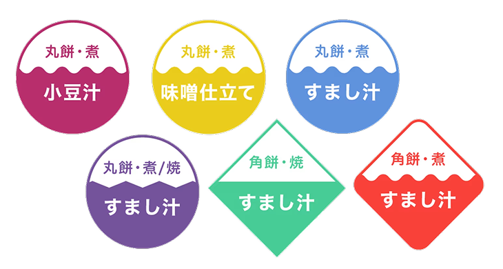
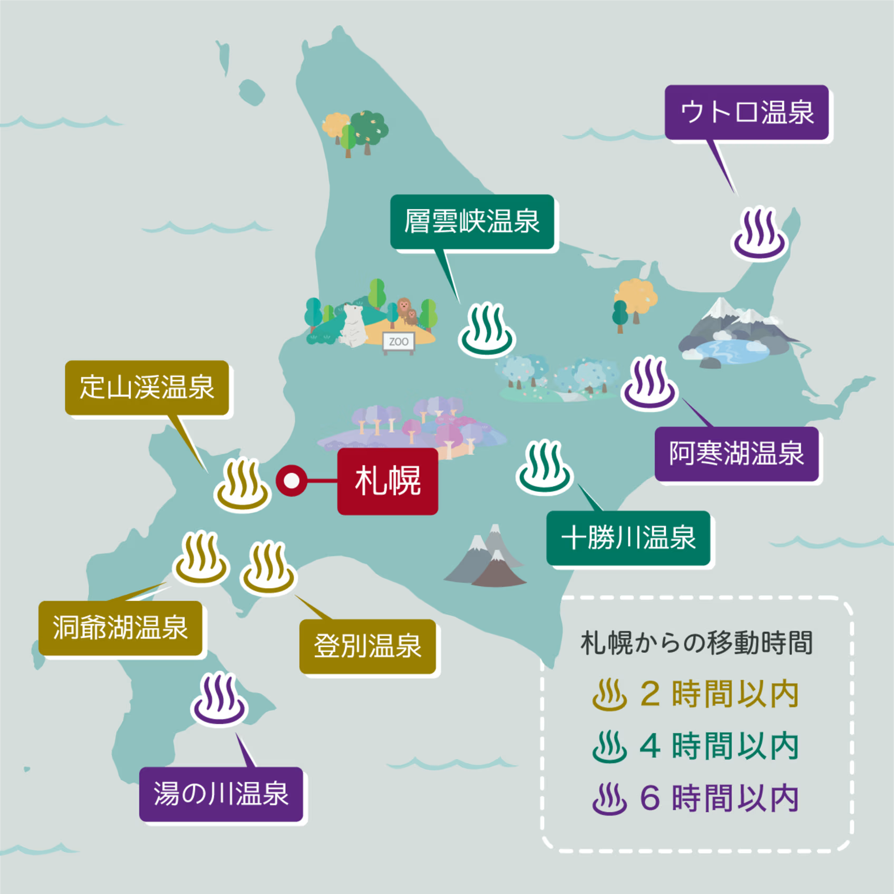
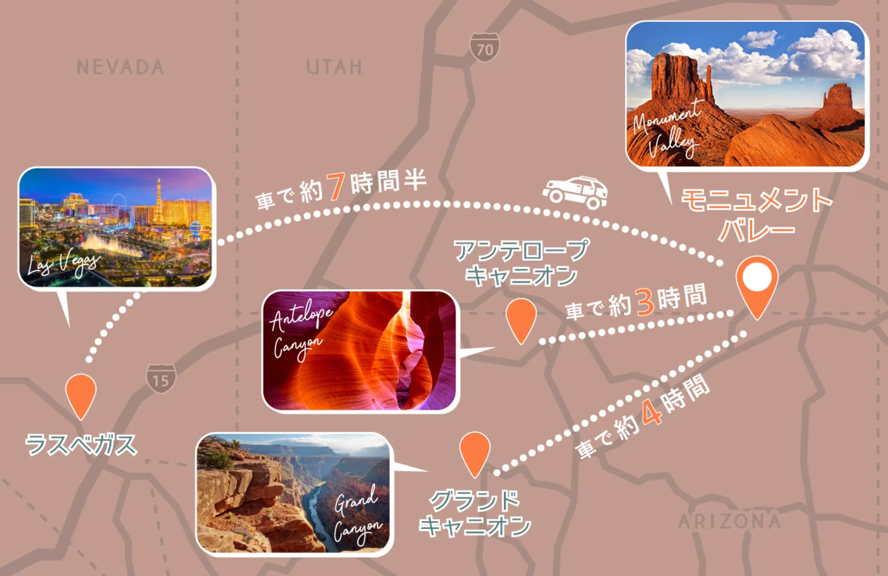

2021〜2年 株式会社旅工房
Webメディア記事用
画像作成
地域ごとのお雑煮文化を可視化
担当：デザイン
https://www.tabikobo.com/tabi-pocket/japan/article55690.html

2021〜2年 株式会社旅工房
地域ごとのお雑煮文化を可視化
担当：デザイン
https://www.tabikobo.com/tabi-pocket/japan/article55690.html
Webメディアの記事中で使用する図解画像を制作。
地図をベースに情報を整理し、読者が内容を視覚的に理解できる図解を作成した。
ここでは地域ごとのお雑煮文化を紹介する記事用図解を中心に紹介する。
お雑煮は地域によって複数要素の違いがあるため、テキストだけでは特徴が解りづらい。
地域の分類と各地域の特徴を一目で理解できる図を作成するため、工夫が必要だった。
お雑煮の違いを分かりやすく伝えるため、
以下の要素を整理して図解化した。
地域ごとの分類は色分けで表現し、
餅の形や調理方法はアイコンの形状で表現することで
一目で特徴が把握できるようにしている。


北海道の温泉地を紹介する記事用マップ。
札幌からの所要時間が分かるよう色分けした。

モニュメントバレー観光記事用マップ。
他観光地との位置関係と車での移動時間を地図上で表現した。